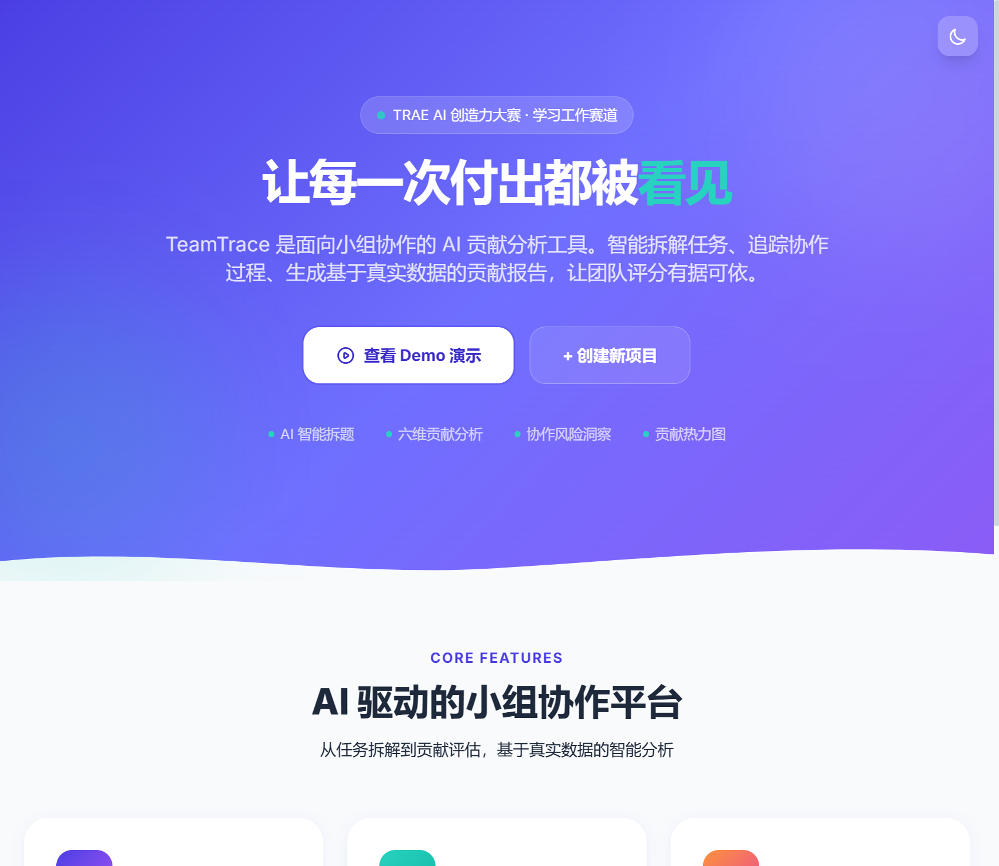
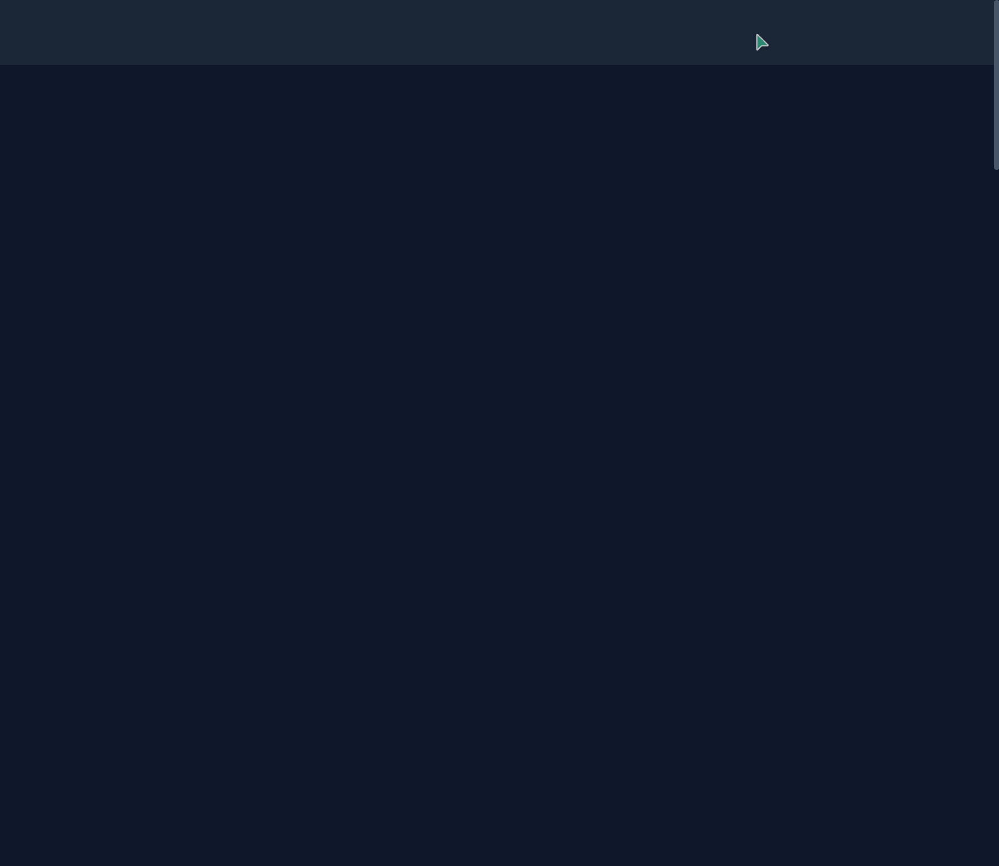

1Demo 简介
是什么
TeamTrace（小组协作贡献地图）是一款纯前端 Web 应用（单 HTML 文件），面向高校小组协作场景，通过 AI 六维贡献分析引擎，将小组成员的真实贡献量化为可视化报告。双击即可在浏览器中运行，零安装、零配置、零依赖。
面向谁
核心用户包括：
- 大学生：课程设计、毕业设计、竞赛组队等小组作业场景
- 组长/负责人：需要公平分配贡献度、减少组内矛盾
- 教师：需要客观数据辅助小组作业评分
核心功能
🤖
AI 智能拆题
输入项目描述，AI 自动识别项目类型，生成结构化任务清单（含优先级、标签、截止日期），并智能均衡分配给成员
📋
可视化任务看板
拖拽式三列看板（待办/进行中/已完成），支持优先级标签、截止日期、实时搜索、成员筛选、任务详情编辑
📊
六维贡献分析
AI 生成雷达图、贡献占比、综合排名、活跃热力图、协作风险洞察、个人评估评语，分析方法论完全透明

首页：AI 驱动的小组协作平台，一键查看 Demo 或创建新项目
2Demo 创作思路
灵感来源
每个大学生都经历过小组作业的痛点：辛辛苦苦做了大部分工作，最后却和"搭便车"的同学拿到一样的分数；组长凭印象打分，认真做事的人被忽视，善于表现的人反而得分高。我曾亲眼见到身边同学因为小组作业贡献分配不公而产生矛盾，甚至影响友谊。这让我开始思考：有没有一种工具，能让小组协作中的每一份付出都被客观记录、被公平看见？
想解决的问题
🚶
"搭便车"问题
部分成员几乎不参与实际工作，却凭团队成果获得相同分数
👻
贡献隐形化
调研、调试、文档等"幕后工作"不被看见，安静做事的人被忽视
⚖️
评估主观化
组长凭印象打分，缺乏客观数据，直接导致组内矛盾和评分争议
🔍
过程不可追溯
项目结束后"谁做了什么"变成糊涂账，争议时无法还原协作过程
为什么做这个方向
市面上不是没有协作工具——Trello、Notion、飞书等都很成熟，但它们要么是通用项目管理工具（对学生来说太重），要么是互评问卷工具（本质上还是主观打分）。我注意到一个关键判断：真正的贡献度量不应该依赖人的主观填写，而应该从实际任务数据中自动推导。
核心设计决策：摒弃"自评+互评"的问卷模式，改为"任务驱动"模式——成员每完成一个任务就填写成果描述，AI 根据任务完成度、产出质量、时间节点、技术标签等客观数据自动计算贡献分。每一分背后都有据可查，从根源上杜绝"自说自话"。
技术上选择纯前端单文件架构也是一个重要取舍：学生群体使用工具的门槛必须极低，不能要求他们安装 Node.js、配置服务器、注册账号。双击 index.html 就能用，这是落地可行性的底线。
3Demo 体验地址
本 Demo 为交互式 HTML 文件，按要求以 ZIP 格式打包上传至社区。
📦
TeamTrace-Demo.zip
解压后双击 index.html 即可在任意现代浏览器中运行，无需安装任何环境
使用说明：打开后点击"查看 Demo 演示"即可体验内置的完整示例项目（4人团队、12个任务的软件工程课程设计），也可点击"创建新项目"从零开始。所有数据保存在浏览器本地，关闭后数据不丢失。支持暗色模式（按 D 键切换）、数据导出/导入、报告打印。
也可以直接在浏览器中打开本地文件体验完整功能：
零安装零配置离线可用数据本地存储支持打印导出暗色模式响应式设计
4TRAE 实践过程
TeamTrace 完全使用 TRAE AI 辅助开发完成。从产品构思、架构设计、代码实现、Bug 修复到最终润色，TRAE 全程参与。以下是开发的关键步骤：
1
产品构思与需求定义
通过对话向 TRAE 描述小组作业中"搭便车"的痛点，TRAE 帮助我梳理了产品定位、核心功能、目标用户，并生成了详细的产品研制计划（PRD），包括页面结构、数据模型、AI分析算法设计。
2
v1 原型快速搭建
TRAE 在单个 HTML 文件中快速搭建了首页、项目创建页、看板页、报告页的完整原型，集成了 Tailwind CSS 和 Chart.js，实现了基础的任务管理和贡献分析功能。
TRAE 构建的三列拖拽看板，支持任务增删改查、搜索筛选、成员过滤
3
v2 功能增强：AI拆题 + 六维分析引擎
在 v1 基础上，TRAE 实现了核心的 AI 智能任务拆分算法（解析项目描述→生成结构化任务→智能分配），以及六维贡献分析引擎（任务完成度、产出质量、进度推动、技术深度、文件贡献、协作配合），并加入了雷达图、环形图、折线图等可视化。
4
v3 架构审查与全面优化
TRAE 自主进行了全面的架构审查，发现了 3 个 P0 级 Bug（aiBreakdown 返回错误数组、搜索框焦点丢失、导出报告排序错误）、3 个 P1 级问题（XSS 注入风险、全量重渲染、Demo 持久化矛盾）、3 个 P2 级问题（无分析缓存、图表销毁重建、无数据校验），全部修复后又针对大赛四维评分标准（创新性、实用性、完成度、美观度）进行了增强。

暗色模式下的报告页面，护眼舒适
5
最终润色与文档交付
TRAE 完成了暗色模式全页面适配、首页/创建页主题切换按钮、打印优化样式、数据导出/导入备份、键盘快捷键系统（/搜索、N新建、D暗色、Esc关闭）、贡献热力图、AI方法论透明展示、XSS安全防护、动画系统优化，并创建了创新报名帖和本Demo作品帖。
关键任务对话 Session ID
以下为使用 TRAE 完成关键开发任务的对话 Session ID（用于证明作品由 TRAE 开发完成）：
注意：以下 Session ID 需替换为您在 TRAE 中实际对话的真实 ID。可在 TRAE 对话历史中找到对应的会话并复制 ID。
任务1: 产品构思 + PRD生成 + v1原型搭建
Session ID: [请替换为实际Session ID]
任务2: AI智能拆题 + 六维分析引擎 + 数据可视化
Session ID: [请替换为实际Session ID]
任务3: 架构审查 + P0-P3 Bug修复 + 大赛增强 + 最终润色
Session ID: [请替换为实际Session ID]
5开发心得
TRAE 开发体验
使用 TRAE 开发 TeamTrace 的过程中，最大的感受是AI 不仅是代码生成器，更是一个全能的协作伙伴。从需求分析时帮我梳理痛点、做架构决策，到编码时快速实现复杂功能（如六维分析算法、拖拽看板、多图表联动），再到后期自主发现我没注意到的 Bug 和安全隐患（XSS、重复变量声明、缓存失效），TRAE 的参与贯穿了整个开发生命周期。
特别值得一提的是架构审查环节——TRAE 能够从 6 个维度（架构、数据、性能、安全、交互、扩展性）系统性地分析代码问题，并按 P0-P3 分级给出修复方案，这比我自己 Code Review 的覆盖面广得多。最终针对大赛评分标准的增强也是 TRAE 主动提出并实现的，比如贡献热力图、暗色模式、打印优化、键盘快捷键等，这些细节让产品从"能用"变成了"好用"。
技术亮点回顾
- 零依赖架构：单 HTML 文件，CDN 引入 Tailwind CSS 和 Chart.js，双击即运行
- 本地 AI 引擎：六维贡献分析完全在浏览器内运行，无需 API 调用，离线可用
- 分析方法论透明：每个维度的评分公式都对用户可见，不是黑箱
- 贡献热力图：近 7 天活跃度 5 级色阶可视化，一眼识别工作节奏
- XSS 安全防护：所有用户输入统一经 esc() 函数转义
- 性能优化：分析缓存 + 图表 .update() 复用 + 局部 DOM 更新